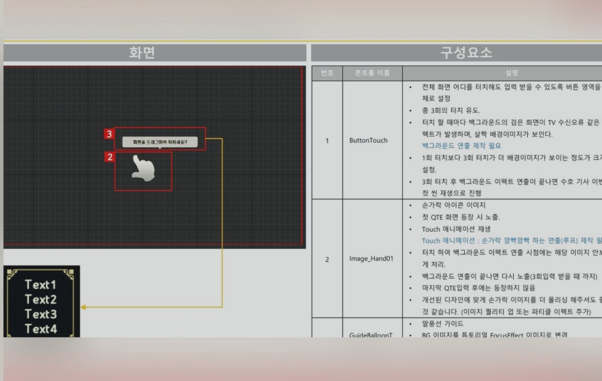
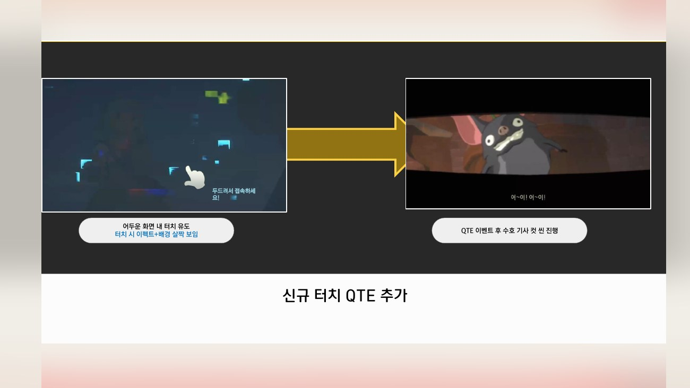
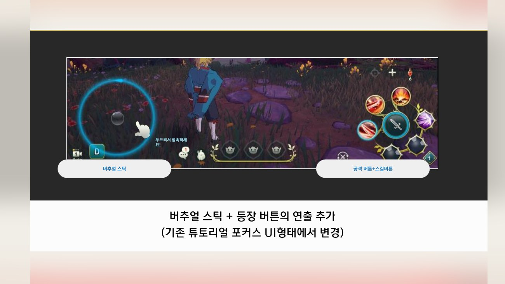
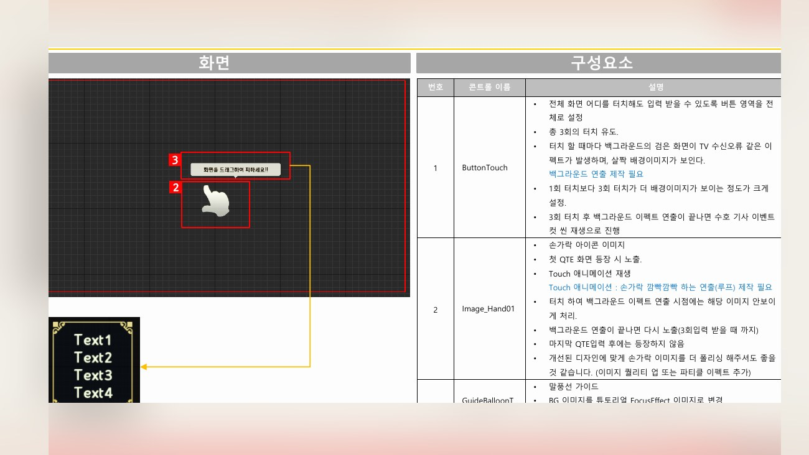
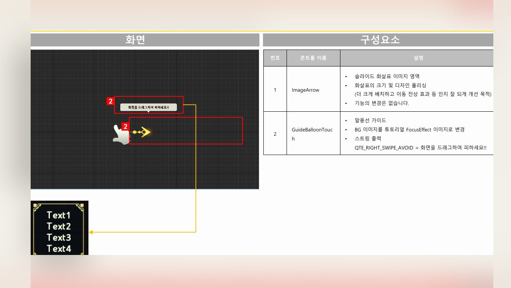
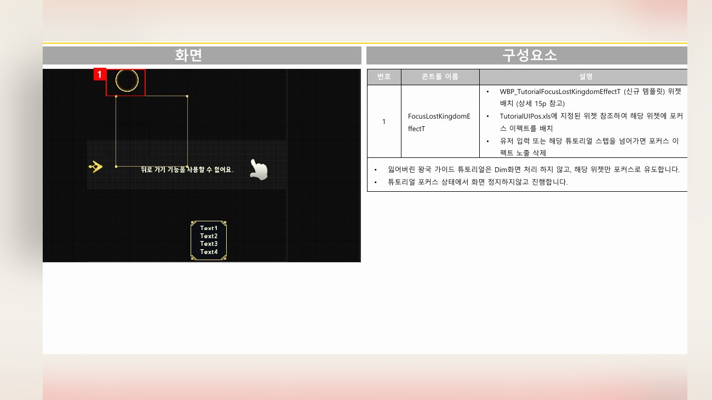
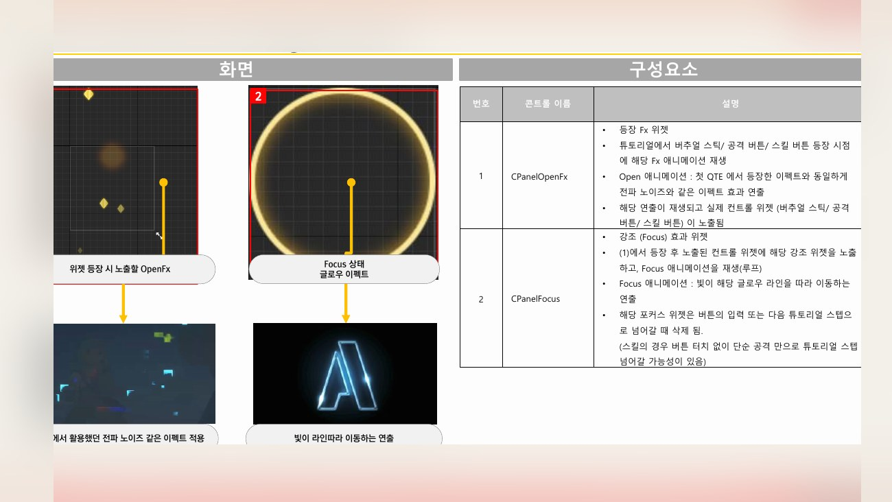
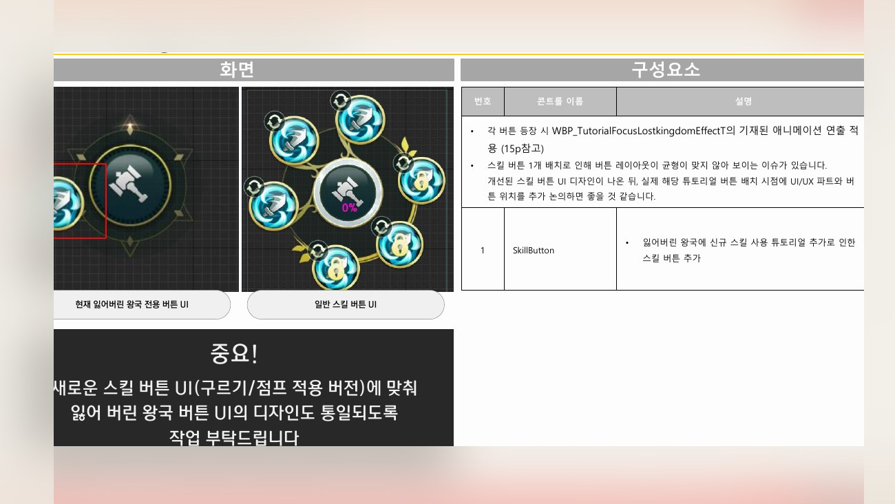

Planning Context
어떤 기획이었나
- 콘텐츠 진행 중 가이드가 부족하면 유저가 전투 목표와 조작 타이밍을 놓치기 쉽습니다.
- QTE나 특수 진행 흐름은 일반 전투 UI와 다르게 명확한 안내가 필요합니다.
ProjectN · Content Guide
잃어버린 왕국 콘텐츠의 가이드, QTE, 진입/진행 안내를 정리한 콘텐츠 UX 개선 사례입니다.

Planning Context
Process
Deliverables
Result
콘텐츠 진행 중 필요한 조작 안내와 가이드를 정리해 전투 목표와 반응 지점을 더 명확하게 만들었습니다.
Deliverable Captures
원본 문서는 포함하지 않고, 포트폴리오 확인용으로 일부 페이지만 이미지화했습니다. 슬라이드 마스터/상하단 영역은 흐림 처리했습니다.






